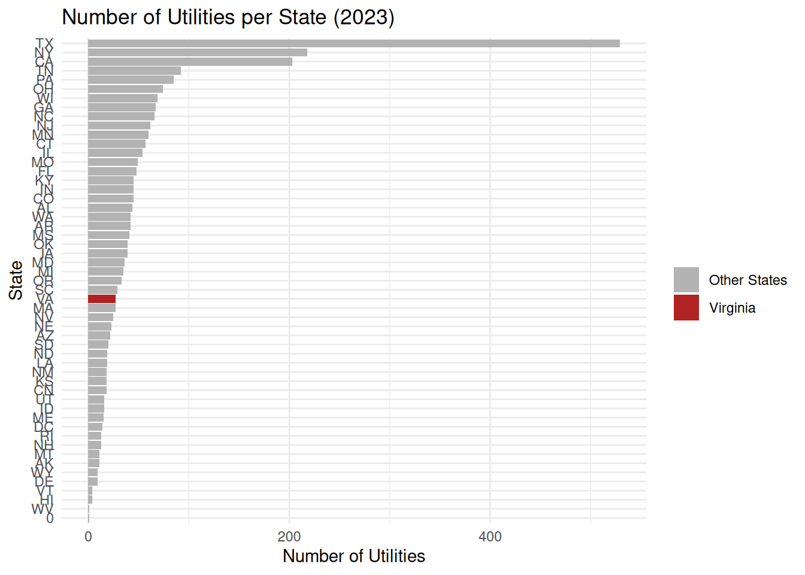
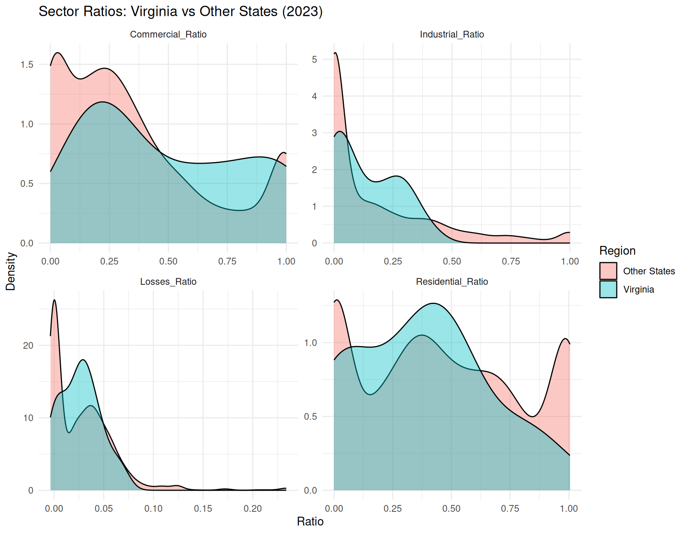
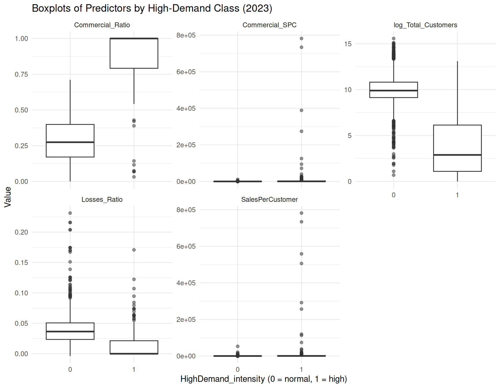
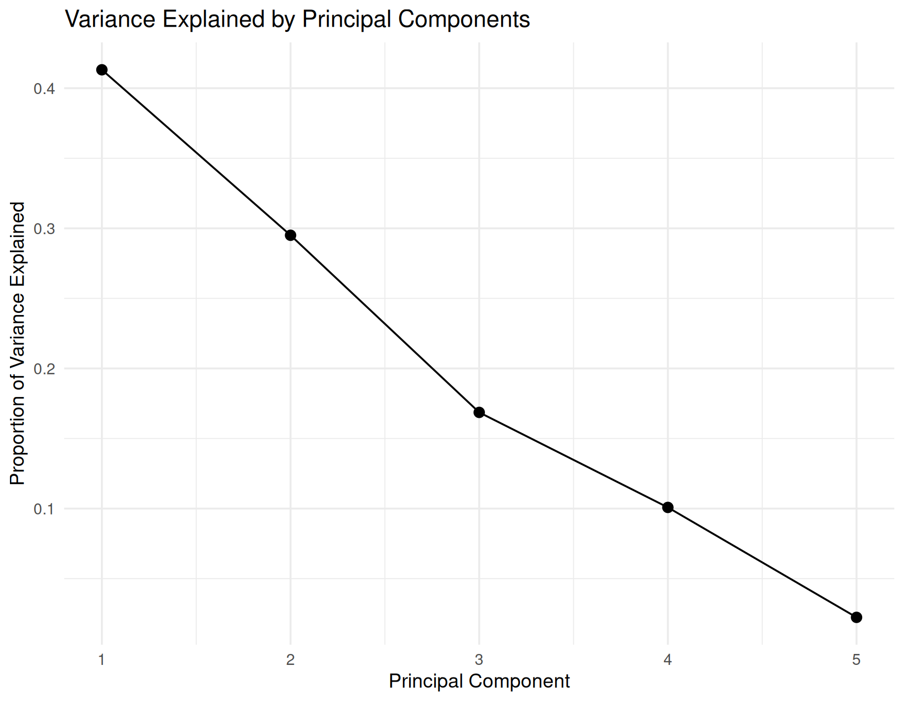
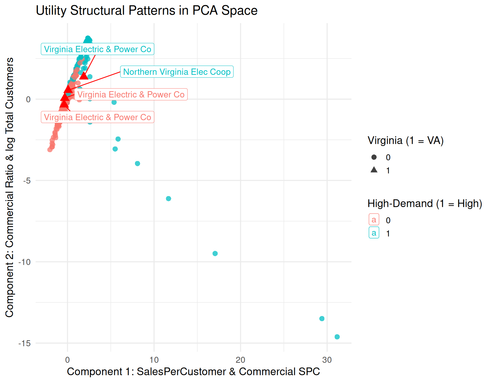
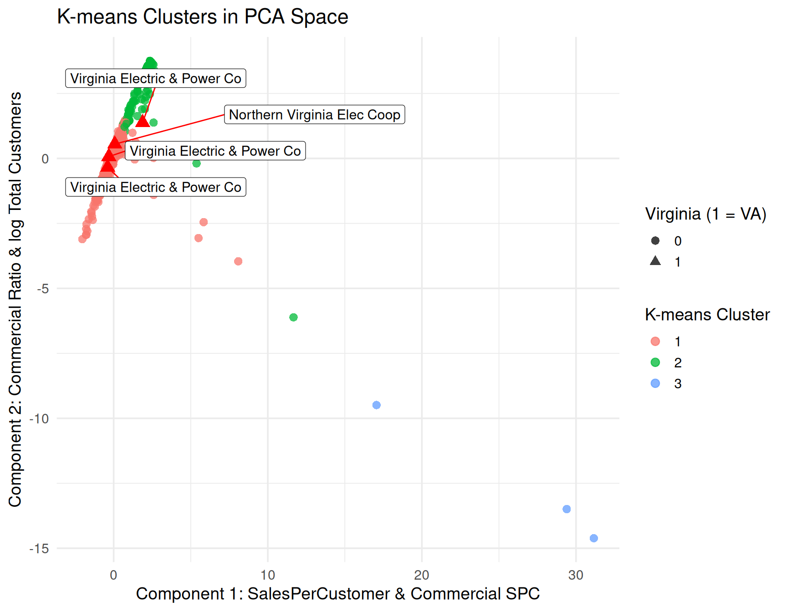
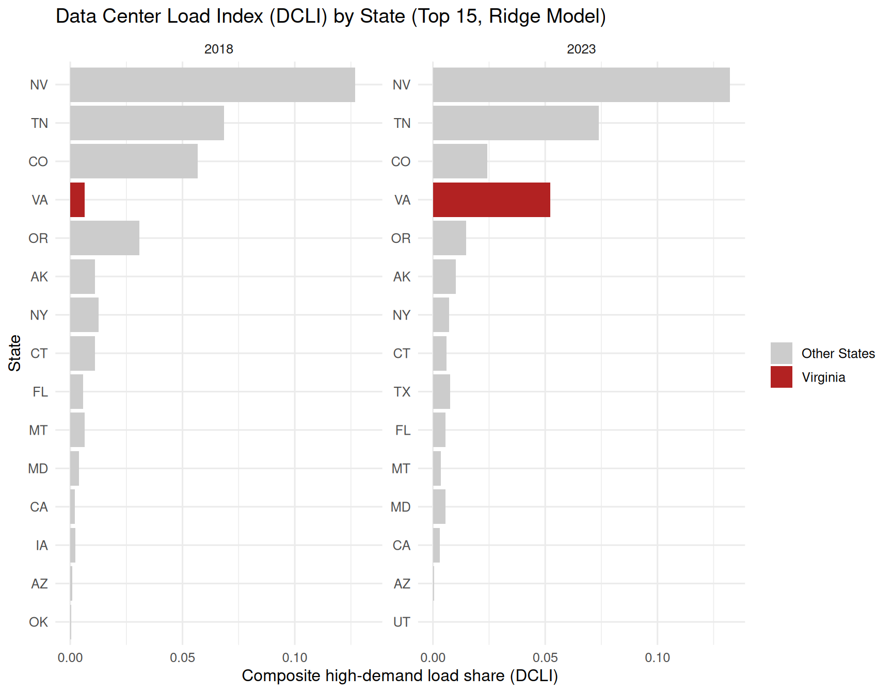

library(dplyr)
library(tidyr)
library(ggplot2)
library(readr)
library(stringr)
library(reshape2)
theme_set(theme_minimal())
elec_2023 <- read_csv("data/power/electricity_2023.csv")
elec_all <- read_csv("data/power/electricity_2015_to_2024.csv")
# glimpse(elec_2023)
# glimpse(elec_all)
############################################################
## Data Cleaning & Feature Engineering
############################################################
# Utility to build features and clean data
# - is_VA classifies obs if Utility.State == "VA"
# - Filter out certain important fields that are zero
# - Feature engineer
featurize_utilities_raw <- function(df) {
df %>%
mutate(
is_VA = if_else(Utility.State == "VA", 1L, 0L)
) %>%
filter(
Retail.Total.Customers > 0,
Retail.Total.Sales > 0,
Uses.Total > 0
) %>%
mutate(
Commercial_Ratio = Retail.Commercial.Sales / Retail.Total.Sales,
Residential_Ratio = Retail.Residential.Sales / Retail.Total.Sales,
Industrial_Ratio = Retail.Industrial.Sales / Retail.Total.Sales,
SalesPerCustomer = Retail.Total.Sales / Retail.Total.Customers,
Commercial_SPC = if_else(Retail.Commercial.Customers > 0,
Retail.Commercial.Sales / Retail.Commercial.Customers,
NA_real_),
Residential_SPC = if_else(Retail.Residential.Customers > 0,
Retail.Residential.Sales / Retail.Residential.Customers,
NA_real_),
Losses_Ratio = Uses.Losses / Uses.Total,
log_Total_Sales = log(Retail.Total.Sales),
log_Total_Customers = log(Retail.Total.Customers)
)
}
elec_2023_fe <- featurize_utilities_raw(elec_2023)
elec_all_fe <- featurize_utilities_raw(elec_all)High-Demand Utilities in Virginia: Statistical Learning Project CODE
Exploratory Data Analysis
The following code is used in the Exploratory Data Analysis section.
state_counts_2023 <- elec_2023_fe %>%
count(Utility.State, sort = TRUE) %>%
mutate(
Highlight = if_else(Utility.State == "VA", "Virginia", "Other States")
)
ggplot(state_counts_2023,
aes(x = reorder(Utility.State, n), y = n, fill = Highlight)) +
geom_col() +
coord_flip() +
scale_fill_manual(values = c("Virginia" = "firebrick", "Other States" = "grey70")) +
labs(
title = "Number of Utilities per State (2023)",
x = "State",
y = "Number of Utilities",
fill = ""
)

type_counts_2023 <- elec_2023_fe %>%
count(Utility.Type, sort = TRUE)
ggplot(type_counts_2023,
aes(x = reorder(Utility.Type, n), y = n)) +
geom_col() +
coord_flip() +
labs(
title = "Number of Utilities by Type (2023)",
x = "Utility Type",
y = "Count"
)
############################################################
## Distribution Plots for Key Numeric Variables (2023)
############################################################
candidate_numeric_cols <- c(
"Demand.Summer.Peak",
"Demand.Winter.Peak",
"Sources.Generation",
"Sources.Purchased",
"Uses.Total",
"Retail.Residential.Sales",
"Retail.Commercial.Sales",
"Retail.Industrial.Sales",
"Retail.Total.Sales",
"Retail.Total.Customers"
)
num_vars_2023 <- elec_2023_fe %>%
select(any_of(candidate_numeric_cols))
num_long_2023 <- num_vars_2023 %>%
tidyr::pivot_longer(
everything(),
names_to = "variable",
values_to = "value"
)
ggplot(num_long_2023, aes(x = value)) +
geom_histogram(bins = 50) +
facet_wrap(~ variable, scales = "free") +
labs(
title = "Distributions of Key Electricity Variables (2023, original scale)",
x = "Value",
y = "Count"
)
ggplot(num_long_2023, aes(x = value)) +
geom_histogram(bins = 50) +
facet_wrap(~ variable, scales = "free") +
scale_x_log10() +
labs(
title = "Distributions of Key Electricity Variables (2023, log10 scale)",
x = "Value (log10)",
y = "Count"
)
############################################################
## Sector Mix & Ratios (2023, including Virginia vs Others)
############################################################
ratio_long_2023 <- elec_2023_fe %>%
select(
Utility.State, is_VA,
Commercial_Ratio, Residential_Ratio,
Industrial_Ratio, Losses_Ratio
) %>%
tidyr::pivot_longer(
cols = c(Commercial_Ratio, Residential_Ratio, Industrial_Ratio, Losses_Ratio),
names_to = "ratio_type",
values_to = "value"
)
ggplot(ratio_long_2023,
aes(x = value)) +
geom_histogram(bins = 50) +
facet_wrap(~ ratio_type, scales = "free") +
labs(
title = "Distribution of Sector Ratios (2023)",
x = "Ratio",
y = "Count"
)
ratio_long_2023_va <- ratio_long_2023 %>%
mutate(
Region = if_else(is_VA == 1L, "Virginia", "Other States")
)
ggplot(ratio_long_2023_va,
aes(x = value, fill = Region)) +
geom_density(alpha = 0.4) +
facet_wrap(~ ratio_type, scales = "free") +
labs(
title = "Sector Ratios: Virginia vs Other States (2023)",
x = "Ratio",
y = "Density",
fill = "Region"
)

spc_long_2023 <- elec_2023_fe %>%
dplyr::select(
is_VA,
SalesPerCustomer,
Commercial_SPC,
Residential_SPC
) %>%
tidyr::pivot_longer(
cols = c(SalesPerCustomer, Commercial_SPC, Residential_SPC),
names_to = "metric",
values_to = "value"
) %>%
dplyr::mutate(
Region = if_else(is_VA == 1L, "Virginia", "Other States")
)
ggplot(spc_long_2023,
aes(x = Region, y = value)) +
geom_boxplot(outlier.alpha = 0.4) +
facet_wrap(~ metric, scales = "free_y") +
scale_y_log10() +
labs(
title = "Per-Customer Electricity Intensities (2023, log scale)",
x = "",
y = "Value (log10)"
)
ggplot(elec_2023_fe,
aes(x = Retail.Total.Customers,
y = Retail.Total.Sales,
color = factor(is_VA))) +
geom_point(alpha = 0.6) +
scale_x_log10() +
scale_y_log10() +
labs(
title = "Total Sales vs Total Customers (2023)",
x = "Total Customers (log10)",
y = "Total Sales (log10)",
color = "Virginia (1 = VA)"
) +
scale_color_manual(values = c("0" = "gray60", "1" = "red"))
ggplot(elec_2023_fe,
aes(x = Commercial_Ratio,
y = Commercial_SPC,
color = factor(is_VA))) +
geom_point(alpha = 0.6) +
scale_y_log10() +
labs(
title = "Commercial Ratio vs Commercial Sales per Customer (2023)",
x = "Commercial Ratio",
y = "Commercial Sales per Commercial Customer (log10)",
color = "Virginia (1 = VA)"
) +
scale_color_manual(values = c("0" = "gray60", "1" = "red"))
va_vs_us_year <- elec_all_fe %>%
mutate(Region = if_else(Utility.State == "VA", "Virginia", "Other States")) %>%
group_by(Year, Region) %>%
summarise(
total_sales = sum(Retail.Total.Sales, na.rm = TRUE),
total_customers = sum(Retail.Total.Customers, na.rm = TRUE),
avg_SalesPerCustomer = mean(SalesPerCustomer, na.rm = TRUE),
avg_Commercial_Ratio = mean(Commercial_Ratio, na.rm = TRUE),
.groups = "drop"
)
ggplot(va_vs_us_year,
aes(x = Year, y = avg_SalesPerCustomer, color = Region)) +
geom_line(size = 1) +
labs(
title = "Average Sales per Customer: Virginia vs Other States (2015–2024)",
x = "Year",
y = "Average Sales per Customer",
color = "Region"
) +
scale_color_manual(values = c("Virginia" = "red", "Other States" = "gray40"))
ggplot(va_vs_us_year,
aes(x = Year, y = avg_Commercial_Ratio, color = Region)) +
geom_line(size = 1) +
labs(
title = "Average Commercial Ratio: Virginia vs Other States (2015–2024)",
x = "Year",
y = "Average Commercial Ratio",
color = "Region"
) +
scale_color_manual(values = c("Virginia" = "red", "Other States" = "gray40"))
Building Classifiers
The following code is used in the Building Classifiers section.
library(glmnet) # ridge logistic
library(rpart) # classification tree
library(rpart.plot) # tree plot
library(randomForest) # random forest
library(class) # KNN
library(knitr)
library(kableExtra)
set.seed(123)
power_combined <- read.csv("data/power/electricity_2015_to_2024.csv")
featurize_utilities <- function(df_raw) {
df_raw %>%
filter(
Retail.Total.Customers > 0,
Retail.Total.Sales > 0,
Retail.Commercial.Customers > 0,
Retail.Commercial.Sales > 0,
Uses.Total > 0
) %>%
# Drop retail power marketers to avoid distorting commercial ratio
filter(Utility.Type != "Retail Power Marketer") %>%
mutate(
Commercial_Ratio = Retail.Commercial.Sales / Retail.Total.Sales,
SalesPerCustomer = Retail.Total.Sales / Retail.Total.Customers,
Commercial_SPC = Retail.Commercial.Sales / Retail.Commercial.Customers,
Losses_Ratio = Uses.Losses / Uses.Total,
log_Total_Sales = log(Retail.Total.Sales),
log_Total_Customers = log(Retail.Total.Customers),
is_VA = if_else(Utility.State == "VA", 1L, 0L)
)
}
train_year <- 2023
df_year <- power_combined %>%
filter(Year == train_year) %>%
featurize_utilities()
# Create z-scores and composite IntensityScore
df_year <- df_year %>%
mutate(
z_Commercial_Ratio = as.numeric(scale(Commercial_Ratio)),
z_SalesPerCustomer = as.numeric(scale(SalesPerCustomer)),
z_Commercial_SPC = as.numeric(scale(Commercial_SPC))
) %>%
mutate(
IntensityScore = z_Commercial_Ratio +
z_SalesPerCustomer +
z_Commercial_SPC
)
# High-demand = top 10% of intensity
cutoff <- quantile(df_year$IntensityScore, 0.90, na.rm = TRUE)
df_year <- df_year %>%
mutate(
HighDemand_intensity = if_else(IntensityScore >= cutoff, 1L, 0L)
)
df_year %>%
count(HighDemand_intensity) %>%
ggplot(aes(x = factor(HighDemand_intensity),
y = n,
fill = factor(HighDemand_intensity))) +
geom_col() +
geom_text(aes(label = n),
vjust = -0.4,
size = 5,
fontface = "bold") +
scale_fill_manual(values = c("#4C78A8", "#F58518"),
name = "High Demand",
labels = c("0 = Normal Demand", "1 = High Demand")) +
labs(
title = "Counts of High-Demand vs Normal-Demand Utilities (2023)",
x = "High Demand Indicator",
y = "Count"
) +
theme_minimal(base_size = 14)
eda_vars <- c(
"Commercial_Ratio",
"SalesPerCustomer",
"Commercial_SPC",
"Losses_Ratio",
"log_Total_Customers"
)
df_long <- df_year %>%
select(all_of(eda_vars), HighDemand_intensity) %>%
pivot_longer(cols = all_of(eda_vars),
names_to = "variable",
values_to = "value")
# Histograms (original scale)
ggplot(df_long, aes(x = value)) +
geom_histogram(bins = 50) +
facet_wrap(~ variable, scales = "free") +
theme_minimal() +
labs(title = "Distributions of Predictors (original scale)")
# Histograms (log scale) to show skew
ggplot(df_long, aes(x = value)) +
geom_histogram(bins = 50) +
facet_wrap(~ variable, scales = "free") +
scale_x_log10() +
theme_minimal() +
labs(title = "Distributions of Predictors (log10 scale)")
# Boxplots by high-demand class
ggplot(df_long,
aes(x = factor(HighDemand_intensity), y = value)) +
geom_boxplot(outlier.alpha = 0.5) +
facet_wrap(~ variable, scales = "free_y") +
theme_minimal() +
labs(
x = "HighDemand_intensity (0 = normal, 1 = high)",
y = "Value",
title = "Boxplots of Predictors by High-Demand Class (2023)"
)

Logistic Regression
The following code is used in the Logistic Regression section.
############################################################
## Train/Test Split (for 2023 models)
############################################################
n <- nrow(df_year)
set.seed(123)
train_idx <- sample(seq_len(n), size = 0.8 * n)
train <- df_year[train_idx, ]
test <- df_year[-train_idx, ]
train$Utility.Type <- factor(train$Utility.Type)
test$Utility.Type <- factor(test$Utility.Type)
############################################################
## Raw Logistic Regression Model
############################################################
model_raw <- glm(
HighDemand_intensity ~ Commercial_Ratio + SalesPerCustomer +
Commercial_SPC + Losses_Ratio + log_Total_Customers +
is_VA + Utility.Type,
data = train,
family = binomial
)
# summary(model_raw) # shows separation / huge coefficients
test$pred_prob_raw <- predict(model_raw, newdata = test, type = "response")
test$pred_class_raw <- ifelse(test$pred_prob_raw >= 0.5, 1L, 0L)
confusion_raw <- table(
Predicted = test$pred_class_raw,
Actual = test$HighDemand_intensity
)
# Basic, theme-friendly table
kable(
confusion_raw,
caption = "Confusion Matrix",
align = "c"
)
# Accuracy as a small table under it
accuracy_raw <- mean(test$pred_class_raw == test$HighDemand_intensity)
kable(
data.frame(`Classification Accuracy` = round(accuracy_raw, 4)),
align = "c"
)| 0 | 1 | |
|---|---|---|
| 0 | 274 | 6 |
| 1 | 1 | 33 |
| Classification.Accuracy |
|---|
| 0.9777 |
############################################################
# Standardized Logistic Model
############################################################
scale_vars <- c(
"Commercial_Ratio",
"SalesPerCustomer",
"Commercial_SPC",
"Losses_Ratio",
"log_Total_Customers"
)
df_year_std <- df_year %>%
mutate(across(
all_of(scale_vars),
~ as.numeric(scale(.x)),
.names = "s_{.col}"
))
train_std <- df_year_std[train_idx, ]
test_std <- df_year_std[-train_idx, ]
train_std$Utility.Type <- factor(train_std$Utility.Type)
test_std$Utility.Type <- factor(test_std$Utility.Type)
model_std <- glm(
HighDemand_intensity ~ s_Commercial_Ratio + s_SalesPerCustomer +
s_Commercial_SPC + s_Losses_Ratio + s_log_Total_Customers +
is_VA + Utility.Type,
data = train_std,
family = binomial
)
# summary(model_std)
test_std$pred_prob_std <- predict(model_std, newdata = test_std, type = "response")
test_std$pred_class_std <- ifelse(test_std$pred_prob_std >= 0.5, 1L, 0L)
confusion_std <- table(
Predicted = test_std$pred_class_std,
Actual = test_std$HighDemand_intensity
)
kable(
confusion_std,
caption = "Confusion Matrix (Standardized Logistic Model)",
align = "c"
)
# Classification accuracy
accuracy_std <- mean(test_std$pred_class_std == test_std$HighDemand_intensity)
kable(
data.frame(`Classification Accuracy` = round(accuracy_std, 4)),
align = "c"
)| 0 | 1 | |
|---|---|---|
| 0 | 274 | 6 |
| 1 | 1 | 33 |
| Classification.Accuracy |
|---|
| 0.9777 |
############################################################
# Ridge Logistic Regression
############################################################
formula_all <- HighDemand_intensity ~ Commercial_Ratio + SalesPerCustomer +
Commercial_SPC + Losses_Ratio + log_Total_Customers +
is_VA + Utility.Type
x_train <- model.matrix(formula_all, data = train)[, -1]
y_train <- train$HighDemand_intensity
ridge_x_cols <- colnames(x_train)
x_test <- model.matrix(formula_all, data = test)[, -1]
y_test <- test$HighDemand_intensity
ridge_cv <- cv.glmnet(
x_train,
y_train,
family = "binomial",
alpha = 0
)
# plot(ridge_cv, main = "Ridge Logistic: CV Error vs Lambda") -->
# best_lambda <- ridge_cv$lambda.min -->
# best_lambda -->
pred_prob_ridge_test <- predict(ridge_cv, newx = x_test,
s = "lambda.min", type = "response")
pred_class_ridge_test <- ifelse(pred_prob_ridge_test >= 0.5, 1L, 0L)
# Confusion matrix
confusion_ridge <- table(
Predicted = pred_class_ridge_test,
Actual = y_test
)
kable(
confusion_ridge,
caption = "Confusion Matrix (Ridge Logistic Model)",
align = "c"
)
# Accuracy table
accuracy_ridge <- mean(pred_class_ridge_test == y_test)
kable(
data.frame(`Classification Accuracy` = round(accuracy_ridge, 4)),
align = "c"
)| 0 | 1 | |
|---|---|---|
| 0 | 275 | 17 |
| 1 | 0 | 22 |
| Classification.Accuracy |
|---|
| 0.9459 |
model_comparison <- data.frame(
Model = c(
"Raw Logistic Regression",
"Standardized Logistic Regression",
"Ridge Logistic Regression"
),
`Training Issues` = c(
"Severe separation; coefficients explode",
"Still unstable; separation persists",
"Stable; L2 penalty prevents divergence"
),
`Interpretability` = c(
"Poor (coefficients meaningless)",
"Poor (scaled version of same issue)",
"Moderate (penalized, but stable)"
),
`AIC` = c(
604.7,
604.7,
NA # glmnet does not compute AIC
),
`Test Accuracy` = c(
round(accuracy_raw, 4),
round(accuracy_std, 4),
round(accuracy_ridge, 4)
),
`Key Notes` = c(
"Not reliable for inference; unstable estimates",
"Standardization alone did not fix the problem",
"Best predictive model; generalizes well"
)
)
kable(model_comparison, align = "c")| Model | Training.Issues | Interpretability | AIC | Test.Accuracy | Key.Notes |
|---|---|---|---|---|---|
| Raw Logistic Regression | Severe separation; coefficients explode | Poor (coefficients meaningless) | 604.7 | 0.9777 | Not reliable for inference; unstable estimates |
| Standardized Logistic Regression | Still unstable; separation persists | Poor (scaled version of same issue) | 604.7 | 0.9777 | Standardization alone did not fix the problem |
| Ridge Logistic Regression | Stable; L2 penalty prevents divergence | Moderate (penalized, but stable) | NA | 0.9459 | Best predictive model; generalizes well |
Tree Classifier
The following code is used in the Tree Classifier section.
############################################################
## Classification Tree
############################################################
#Tree Model
tree_model <- rpart(
HighDemand_intensity ~ Commercial_Ratio + SalesPerCustomer +
Commercial_SPC + Losses_Ratio + log_Total_Customers +
is_VA + Utility.Type,
data = train,
method = "class"
)
#Tree Visualization
rpart.plot(tree_model, main = "Classification Tree for High-Demand Utilities")
print(tree_model)n= 1253
node), split, n, loss, yval, (yprob)
* denotes terminal node
1) root 1253 118 0 (0.905826018 0.094173982)
2) Commercial_Ratio< 0.7096691 1144 9 0 (0.992132867 0.007867133)
4) Commercial_SPC< 12663.81 1135 0 0 (1.000000000 0.000000000) *
5) Commercial_SPC>=12663.81 9 0 1 (0.000000000 1.000000000) *
3) Commercial_Ratio>=0.7096691 109 0 1 (0.000000000 1.000000000) *#Tree Predictions
tree_pred <- predict(tree_model, newdata = test, type = "class")
#Confusion Matrix
confusion_tree <- table(Predicted = tree_pred,
Actual = test$HighDemand_intensity)
kable(
confusion_tree,
caption = "Confusion Matrix (Classification Tree Model)",
align = "c"
)
#Accuracy Table
accuracy_tree <- mean(tree_pred == test$HighDemand_intensity)
kable(
data.frame('Classification Accuracy' = round(accuracy_tree, 4)),
align = "c"
)| 0 | 1 | |
|---|---|---|
| 0 | 273 | 1 |
| 1 | 2 | 38 |
| Classification.Accuracy |
|---|
| 0.9904 |
Random Forest
The following code is used in the Random Forest section.
############################################################
## Random Forest
############################################################
#Random Forest Model
rf_model <- randomForest(
factor(HighDemand_intensity) ~ Commercial_Ratio + SalesPerCustomer +
Commercial_SPC + Losses_Ratio + log_Total_Customers +
is_VA + Utility.Type,
data = train,
ntree = 500,
importance = TRUE
)
print(rf_model)
Call:
randomForest(formula = factor(HighDemand_intensity) ~ Commercial_Ratio + SalesPerCustomer + Commercial_SPC + Losses_Ratio + log_Total_Customers + is_VA + Utility.Type, data = train, ntree = 500, importance = TRUE)
Type of random forest: classification
Number of trees: 500
No. of variables tried at each split: 2
OOB estimate of error rate: 0.4%
Confusion matrix:
0 1 class.error
0 1132 3 0.002643172
1 2 116 0.016949153#Variable Importance Visualization
varImpPlot(rf_model, main = "Random Forest Variable Importance")
#Random Forest Predictions
rf_pred <- predict(rf_model, newdata = test)
#Confusion Matrix
confusion_rf <- table(Predicted = rf_pred,
Actual = test$HighDemand_intensity)
kable(
confusion_rf,
caption = "Confusion Matrix (Random Forest Model)",
align = "c"
)
#Accuracy Table
accuracy_rf <- mean(rf_pred == test$HighDemand_intensity)
kable(
data.frame(`Classification Accuracy` = round(accuracy_rf, 4)),
align = "c"
)| 0 | 1 | |
|---|---|---|
| 0 | 273 | 2 |
| 1 | 2 | 37 |
| Classification.Accuracy |
|---|
| 0.9873 |
KNN
The following code is used in the KNN section.
# ############################################################
# KNN
# ############################################################
#
knn_vars <- c(
"Commercial_Ratio",
"SalesPerCustomer",
"Commercial_SPC",
"Losses_Ratio",
"log_Total_Customers"
)
train_means <- sapply(train[, knn_vars], mean, na.rm = TRUE)
train_sds <- sapply(train[, knn_vars], sd, na.rm = TRUE)
scale_with_train <- function(df_num) {
as.data.frame(
sweep(
sweep(as.matrix(df_num), 2, train_means, "-"),
2, train_sds, "/"
)
)
}
knn_train_X <- scale_with_train(train[, knn_vars])
knn_test_X <- scale_with_train(test[, knn_vars])
knn_train_y <- train$HighDemand_intensity
knn_test_y <- test$HighDemand_intensity
k_val <- 5
knn_pred_test <- class::knn(
train = knn_train_X,
test = knn_test_X,
cl = knn_train_y,
k = k_val
)
confusion_knn <- table(Predicted = knn_pred_test,
Actual = knn_test_y)
kable(
confusion_knn,
caption = "Confusion Matrix (KNN)",
align = "c"
)
accuracy_knn <- mean(knn_pred_test == knn_test_y)
kable(
data.frame(`Classification Accuracy` = round(accuracy_knn, 4)),
align = "c"
)| 0 | 1 | |
|---|---|---|
| 0 | 275 | 10 |
| 1 | 0 | 29 |
| Classification.Accuracy |
|---|
| 0.9682 |
PCA and K-means Unsupervised Approach
The following code is used in the PCA and K-means Unsupervised Approach section.
############################################################
## PCA + K-means (Unsupervised)
############################################################
pca_vars <- c(
"Commercial_Ratio",
"SalesPerCustomer",
"Commercial_SPC",
"Losses_Ratio",
"log_Total_Customers"
)
X_pca <- df_year %>%
select(all_of(pca_vars)) %>%
scale() %>% # z-score standardization
as.matrix()
pca_res <- prcomp(X_pca, center = FALSE, scale. = FALSE)
# Proportion of variance explained
pca_var <- pca_res$sdev^2
pca_var <- pca_var / sum(pca_var)
scree_df <- data.frame(
PC = seq_along(pca_var),
VarExplained = pca_var
)
loadings <- pca_res$rotation # variable loadings for each PC
label_pc <- function(pc_loadings, pc_name) {
top_vars <- sort(abs(pc_loadings), decreasing = TRUE)[1:2]
var_names <- names(top_vars)
sprintf("%s: %s & %s",
pc_name,
gsub("_", " ", var_names[1]),
gsub("_", " ", var_names[2]))
}
pc1_label <- label_pc(loadings[, 1], "Component 1")
pc2_label <- label_pc(loadings[, 2], "Component 2")
pc3_label <- label_pc(loadings[, 3], "Component 3")
# pc1_label
# pc2_label
# pc3_label
ggplot(scree_df, aes(x = PC, y = VarExplained)) +
geom_point(size = 3) +
geom_line() +
scale_x_continuous(breaks = scree_df$PC) +
theme_minimal(base_size = 14) +
labs(
title = "Variance Explained by Principal Components",
x = "Principal Component",
y = "Proportion of Variance Explained"
)
library(ggrepel)
df_pca <- cbind(df_year, as.data.frame(pca_res$x))
va_utils <- c(
"Northern Virginia Elec Coop",
"Virginia Electric & Power Co"
)
annot_df <- df_pca %>%
filter(Utility.Name %in% va_utils)
ggplot(df_pca,
aes(x = PC1, y = PC2,
color = factor(HighDemand_intensity),
shape = factor(is_VA))) +
geom_point(alpha = 0.75, size = 2.8) +
geom_point(
data = annot_df,
aes(x = PC1, y = PC2),
color = "red",
shape = 17,
size = 4,
inherit.aes = FALSE
) +
geom_label_repel(
data = annot_df,
aes(label = Utility.Name),
box.padding = 0.5,
point.padding = 0.3,
segment.color = "red",
size = 4,
fill = "white",
label.size = 0.2,
max.overlaps = Inf
) +
theme_minimal(base_size = 14) +
labs(
title = "Utility Structural Patterns in PCA Space",
x = pc1_label,
y = pc2_label,
color = "High-Demand (1 = High)",
shape = "Virginia (1 = VA)"
)
X_cluster <- df_pca %>%
dplyr::select(PC1, PC2, PC3) %>%
as.matrix()
set.seed(123)
k <- 3
km_res <- kmeans(X_cluster, centers = k, nstart = 25)
df_pca$cluster_km <- factor(km_res$cluster)
ggplot(df_pca,
aes(x = PC1, y = PC2,
color = cluster_km,
shape = factor(is_VA))) +
geom_point(alpha = 0.75, size = 2.8) +
geom_point(
data = annot_df,
aes(x = PC1, y = PC2),
inherit.aes = FALSE,
color = "red",
shape = 17,
size = 4
) +
geom_label_repel(
data = annot_df,
aes(x = PC1, y = PC2, label = Utility.Name),
inherit.aes = FALSE,
box.padding = 0.5,
point.padding = 0.3,
segment.color = "red",
size = 4,
fill = "white",
label.size = 0.2,
max.overlaps = Inf
) +
theme_minimal(base_size = 14) +
labs(
title = "K-means Clusters in PCA Space",
x = pc1_label,
y = pc2_label,
color = "K-means Cluster",
shape = "Virginia (1 = VA)"
)
Model Comparison Summary
The following code is used in the Model Comparison Summary section.
# ############################################################
# Model Comparison Summary (2023)
# ############################################################
model_compare <- data.frame(
Model = c(
"Logistic Regression (Raw)",
"Logistic Regression (Scaled)",
"Ridge Logistic Regression",
"Classification Tree",
"Random Forest",
"KNN (k = 5)"
),
Accuracy = c(
round(accuracy_raw, 4),
round(accuracy_std, 4),
round(accuracy_ridge, 4),
round(accuracy_tree, 4),
round(accuracy_rf, 4),
round(accuracy_knn, 4)
),
Notes = c(
"Coefficient explosion; separation issues",
"Still unstable but standardized",
"Most stable logistic model; good generalization",
"Low-variance, simple interpretable model",
"Highest-performing tree-based model",
"Sensitive to scaling; depends on local structure"
)
)
kable(model_compare, align = "c", caption = "Model Performance Comparison") |>
kable_styling(full_width = FALSE, bootstrap_options = c("striped", "hover", "condensed"))| Model | Accuracy | Notes |
|---|---|---|
| Logistic Regression (Raw) | 0.9777 | Coefficient explosion; separation issues |
| Logistic Regression (Scaled) | 0.9777 | Still unstable but standardized |
| Ridge Logistic Regression | 0.9459 | Most stable logistic model; good generalization |
| Classification Tree | 0.9904 | Low-variance, simple interpretable model |
| Random Forest | 0.9873 | Highest-performing tree-based model |
| KNN (k = 5) | 0.9682 | Sensitive to scaling; depends on local structure |
Results
The following code is used in the Results section.
classify_year_with_models <- function(
year,
data_all = power_combined,
featurizer = featurize_utilities,
ridge_obj = ridge_cv,
rf_obj = rf_model,
formula = formula_all,
train_data = train,
x_cols = ridge_x_cols
) {
df_year_fe <- data_all %>%
dplyr::filter(Year == year) %>%
featurizer()
df_year_fe <- df_year_fe %>%
dplyr::mutate(
Utility.Type = factor(
Utility.Type,
levels = levels(train_data$Utility.Type)
)
)
if (is.factor(train_data$is_VA)) {
df_year_fe <- df_year_fe %>%
dplyr::mutate(is_VA = factor(is_VA, levels = levels(train_data$is_VA)))
} else if (is.logical(train_data$is_VA)) {
df_year_fe <- df_year_fe %>%
dplyr::mutate(is_VA = as.logical(is_VA))
} else if (is.numeric(train_data$is_VA)) {
df_year_fe <- df_year_fe %>%
dplyr::mutate(is_VA = as.numeric(is_VA))
}
terms_x <- delete.response(stats::terms(formula))
X_year <- model.matrix(terms_x, data = df_year_fe)
X_year <- X_year[, colnames(X_year) != "(Intercept)", drop = FALSE]
if (!is.null(x_cols)) {
X_tmp <- matrix(0, nrow = nrow(X_year), ncol = length(x_cols))
colnames(X_tmp) <- x_cols
common <- intersect(colnames(X_year), x_cols)
if (length(common) > 0) {
X_tmp[, common] <- X_year[, common, drop = FALSE]
}
X_year <- X_tmp
}
ridge_prob <- predict(
ridge_obj,
newx = X_year,
s = "lambda.min",
type = "response"
)
ridge_class <- ifelse(ridge_prob >= 0.5, 1L, 0L)
rf_vars <- c(
"Commercial_Ratio", "SalesPerCustomer", "Commercial_SPC",
"Losses_Ratio", "log_Total_Customers", "is_VA", "Utility.Type"
)
df_for_rf <- df_year_fe %>%
dplyr::select(dplyr::all_of(rf_vars))
rf_class <- predict(rf_obj, newdata = df_for_rf, type = "response")
if (is.factor(rf_class)) {
rf_class_int <- as.integer(as.character(rf_class))
} else {
rf_class_int <- as.integer(rf_class)
}
df_year_fe %>%
dplyr::mutate(
pred_high_ridge = ridge_class,
pred_high_rf = rf_class_int
)
}
############################################################
## Create classified_all
############################################################
years_to_compare <- c(2018, 2023)
classified_list <- lapply(
years_to_compare,
classify_year_with_models,
train_data = train,
x_cols = ridge_x_cols
)
names(classified_list) <- years_to_compare
classified_all <- dplyr::bind_rows(
lapply(names(classified_list), function(yr) {
classified_list[[yr]] %>%
dplyr::mutate(Year = as.integer(yr))
})
)
############################################################
## Proportion of high-demand utilities (Virginia vs national) - Ridge Model
############################################################
state_prop_high <- classified_all %>%
dplyr::group_by(Year, Utility.State) %>%
dplyr::summarise(
n_util = dplyr::n(),
n_high_ridge = sum(pred_high_ridge == 1L, na.rm = TRUE),
prop_high_ridge = n_high_ridge / n_util,
.groups = "drop"
)
plot_prop_va <- ggplot(
state_prop_high,
aes(
x = reorder(Utility.State, prop_high_ridge),
y = prop_high_ridge,
fill = Utility.State == "VA"
)
) +
geom_col() +
coord_flip() +
facet_wrap(~ Year, scales = "free_y") +
scale_fill_manual(
values = c("grey80", "steelblue"),
labels = c("Other States", "Virginia"),
name = ""
) +
labs(
title = "Proportion of Predicted High-Demand Utilities by State (Ridge Model)",
x = "State",
y = "Proportion of utilities classified as high-demand"
) +
theme_minimal(base_size = 12)
print(plot_prop_va)
############################################################
## Weighted DCLI dominance (retail sales, customers, commercial sales)
############################################################
state_weighted <- classified_all %>%
dplyr::group_by(Year, Utility.State) %>%
dplyr::summarise(
total_retail_sales = sum(Retail.Total.Sales, na.rm = TRUE),
total_customers = sum(Retail.Total.Customers, na.rm = TRUE),
total_comm_sales = sum(Retail.Commercial.Sales, na.rm = TRUE),
high_sales_ridge = sum(dplyr::if_else(pred_high_ridge == 1L,
Retail.Total.Sales, 0),
na.rm = TRUE),
high_customers_ridge = sum(dplyr::if_else(pred_high_ridge == 1L,
Retail.Total.Customers, 0),
na.rm = TRUE),
high_comm_ridge = sum(dplyr::if_else(pred_high_ridge == 1L,
Retail.Commercial.Sales, 0),
na.rm = TRUE),
.groups = "drop"
) %>%
dplyr::mutate(
prop_sales_high_ridge = dplyr::if_else(
total_retail_sales > 0,
high_sales_ridge / total_retail_sales,
NA_real_
),
prop_customers_high_ridge = dplyr::if_else(
total_customers > 0,
high_customers_ridge / total_customers,
NA_real_
),
prop_comm_high_ridge = dplyr::if_else(
total_comm_sales > 0,
high_comm_ridge / total_comm_sales,
NA_real_
),
DCLI_ridge = (
prop_sales_high_ridge +
prop_customers_high_ridge +
prop_comm_high_ridge
) / 3
)
top_states_dcli <- state_weighted %>%
dplyr::group_by(Year) %>%
dplyr::arrange(dplyr::desc(DCLI_ridge)) %>%
dplyr::slice_head(n = 15) %>%
dplyr::ungroup()
plot_dcli_va <- ggplot(
top_states_dcli,
aes(
x = reorder(Utility.State, DCLI_ridge),
y = DCLI_ridge,
fill = Utility.State == "VA"
)
) +
geom_col() +
coord_flip() +
facet_wrap(~ Year, scales = "free_y") +
scale_fill_manual(
values = c("grey80", "firebrick"),
labels = c("Other States", "Virginia"),
name = ""
) +
labs(
title = "Data Center Load Index (DCLI) by State (Top 15, Ridge Model)",
x = "State",
y = "Composite high-demand load share (DCLI)"
) +
theme_minimal(base_size = 12)
print(plot_dcli_va)
